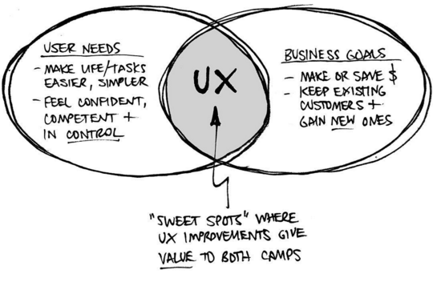

UX Design
UX strives for balance between business goals and context, user needs and behavior, and content.
User Experience (UX) Design is how web designers optimize their websites for ease of use. The aim of UX is to connect the publisher's goals to the user’s needs in a way that benefits both sides of the relationship.
UX draws from visual design principles, psychology, user-based research and information architecture. It encompasses many of the buzzwords you hear about web design: responsiveness, accessibility, optimization, and end-user testing.
The difference between UX and UI
User Interface (UI) and User Experience (UX) are often miscategorized- even within the industry. The fact that the UI of a product is so crucial to the end experience often leads to the terms being grouped together (UX/UI) or used interchangeably.
But there is a difference. In short, UX is how something meets a user's needs and UI is how it looks and feels during that process.
“Something that looks great but is difficult to use is exemplary of great UI and poor UX. While Something very usable that looks terrible is exemplary of great UX and poor UI.” --Helga Moreno
Moreno's quote illustrates how UX and UI are so intertwined; how many products can you think of that work efficiently but are visually distracting? Often when we see something that lacks in visual design, we think it lacks in quality as well.
Probably the most relatable example of UI vs UX are the differences between the classic and modern Heinz bottles. The classic is easy to recognize and beautifully designed, but the modern version does a lot better getting you ketchup.
What makes good UX
From my experience, there are four things you should keep in mind when you're designing for your website. Your site should be:
Consistency in design means that a user should be able to look at each page of your website separately and still be able to tell they are pieces of a whole. You do this by utilizing color schemes and layouts on each of your pages. CSS makes all the difference here.
Each part of your website should play a role in getting users to take action. If everything is pointing users in the same direction, then you're much more likely to be successful. Cohesiveness comes from the planning stages of web design: wireframes and sitemaps.
Steve Krug wrote a great book about web usability entitled, "Don't Make Me Think." Users shouldn't have to decipher what action you want them to take. You probably have personal experience with this, the more a website makes you think about what you need to be doing, the less likely you are to utilize it.
Finally, you want to make sure your web design stands the test of time. This means sticking to design that's been proven to work rather than jumping on the latest fads. It may seem boring now, but you'll save your time in the future - especially in educational websites like the ones you'll be creating.

Peter Morville's "UX Honeycomb" used to explain the facets of UX design.*
UX Honeycomb explained:

How UX makes the internet a better(hopefully) place
If the goal of UX is to make your websites easier to use and understand, good UX design is a win-win for everyone involved. However, this isn't always the case.
Have you ever been to a webpage where the navigation links didn't work? Or an ad auto-plays for everyone in the room to hear. Bad UX is not just annoying, it can be harmful.
Data privacy is a huge concern for the technology industry today. If you have spent any time on the internet, you've probably encountered websites that make you input information before you utilize the site, whether this is in the form of creating an account or signing up for a newsletter. This type of UX is great for companies, it makes them more money and gives them more information about their users, but not always so great for the users themselves. We don't have time to go into too much detail about this, but it's important to mention that UX isn't all sunshine and rainbows.
When facing an ethical dilemma in your web design, you should ask yourself whether this function or design element benefits an organization or if it's for users. The answer, in the spirit of UX, should be both.
In a way, good UX helps the internet fulfill its purpose. UX design makes the sharing of information easier and more efficient. It opens up the internet to people with fewer resources and helps those who would otherwise not be able to use it.
UX plays a major role in online shopping experiences. It's affected our education and political systems. Everything about how we connect and collaborate on the internet was influenced by UX. This is why its such a buzz word. It's an umbrella term for the goal of making things better.
Good UX simplifies, personalizes and improves your time spent on the web. The applications are endless, all it takes is designing with others in mind.
Back to Top ↑